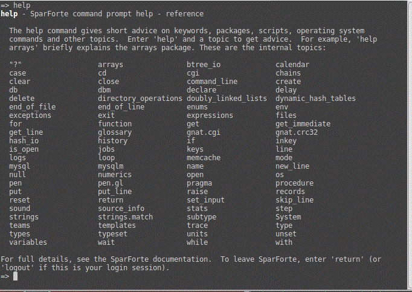
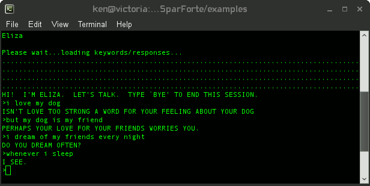

![[SparForte]](art/sparforte.png)
![[Banner]](art/header_cloud.png)
![[Top Main Menu]](art/menu_left.png) |
Intro | Tutorials | Reference | Packages | Examples | Contributors |
| | |||||||||||||||
| ||||||||||||||||
Command Prompt Tutorial 1: SparForte as a CalculatorThanks for taking the time to look at the SparForte. This tutorial is a simple introduction to SparForte by using SparForte to perform interactive math like a pocket calculator. Then there will be an example of running a script. Although this tutorial does not require specific knowledge, there is working knowledge that can explain basic concepts in more detail.
When SparForte is started without an argument, it presents you with a
welcome
message and a command prompt, a "=>". From this prompt, you
can
declare
variables, execute AdaScript statements, or run external
commands. SparForte is case-sensitive, as are many other shells, because
UNIX/Linux environment variables are also case-sensitive. This
means that SparForte treats "IF", "if" and "If" as three different words. SparForte will terminate your session by the
command return (or logout for a login shell).
You can also terminate your session by typing a Control-D (the UNIX
end-of-file character). The help command presents a short summary of recognized SparForte commands.  For a brief description of a particular topic or command, use help and the topic name. => help delay
Example: The Help Command: Help for the Delay Statement
Complete descriptions of all of SparForte commands can be found in the
Reference section of this manual. Summaries of all built-in packages
are found in the Packages section of this manual. SparForte recognizes the console arrow keys and common key sequences used by most shells. The sequences are called key bindings and you can find out more about them in Command Line Interaction in the Reference section. The "?" command (pronounced "print") will print the result of an expression. The basic arithmetic operators are the same as they are in most computer languages: + (add), - (subtract), * (multiply), and / (divide). Also available are ** (exponentiation), rem (remainder), mod (modulus), and (bitwise and), or (bitwise or), xor (bitwise exclusive or). Parentheses can be used to group subexpressions. => ? 5.5+2.5
Example: Arithmetic on the Command Prompt
Because SparForte is a shell that can run commands, if you omit the "?",
SparForte
assumes that the expression is the name of a Linux command and will
attempt to run it.
=> 12/4
Example: Arithmetic without ? is treated as a command
In this case, SparForte attempts to run a command named "12/4" but doesn't find one. Running commands is discussed in more detail in the next tutorial. SparForte can work with strings and characters as well as numbers. Strings are surrounded by double quotes and characters by single quotes. There is no limit on the length of strings (they are "unbounded") but single quotes must have exactly one character. => ? "Hello world!"
Example: Strings and Characters at the Command Prompt
Quotation marks are sometimes treated as they appear in a UNIX
shell. This is discussed in other tutorials. The "?" command is a quick way to display a result in a readable
format to standard output. SparForte has other output commands.
The put and put_line procedures will also display results.
These procedures have more options than "?". The parameters are
enclosed in parentheses and separated by commas. The put
procedure, for example, can format the result using a picture string. => put( 123.45, "####9.99" )
Example: How to Format Numbers
Strings operators include "&" (concatenation) and * (duplication). Special string characters can be expressed with "ASCII", a period, and the code name for the character. => ? "Hello " & "world!"
Example: String and Character Operators at the Command Prompt
SparForte performs authentic Boolean arithmetic. Boolean expressions are logically "true" or "false". The expressions can be computed using "=", "/=", ">", ">=", "<", "<=", in, not in, and, or and xor. Numbers and strings cannot be compared directly: SparForte assumes that you have made a mistake by trying to compare items that are not alike and it will not try to guess at what you meant to do. (There are ways to explicitly convert numbers into strings, and strings into numbers.) The built-in constants "true" and "false" represent true and false respectively: unlike many scripting languages and shells, they have no numeric or string equivalent. A zero is not false: it is a numeric zero. An empty string is not false: it is an string with no characters. true and false are a completely different type of value (an enumerated value, to be precise). => ? 5=5
Example: Boolean Operators at the Command Prompt
In addition to the "?" command, another single-character word is the last outputted value. This is represented by the "%" operand (pronounced "last output"). This is the output of the last put, put_line or "?". This is useful for doing calculations without having save the intermediate results in a variable. => ? 2+2
Example: The Last Output Operand
More advanced expressions can be created using SparForte's built-in packages. These packages containing routines that perform more complex calculations. For example, the strings package contains many routines for working with strings such as calculating the length of string, editing strings or performing pattern matching. The "strings.glob" function performs POSIX shell "globbing" pattern matching. The format for globbing patterns is discussed in the Packages section. The "strings.length" function returns the length of a string. => ? strings.glob( "*pear*", "apple pear peach" )
Example: Built-in String Functions at the Command Prompt
Intermediate results of your calculations can be saved using variables. If you are using the SparForte command prompt, SparForte can create variables automatically when you assign the results to a new name. The assignment operator is ":=". => v := (2*3 + 5)/2
Example: Automatic Variable Declarations at the Command Prompt
Like many strong typed languages, all variables are declared to provide protection against spelling mistakes and to provide the variable with a type. For example, a string variable may only contain string values. This prevents variables containing fundamentally different values from being combined in nonsense ways. When SparForte declared "v", it was given the type of "universal_numeric" (that is, a variable compatible with any kind of number). You can explicitly declare a variable, giving it type of your choosing. => x : integer
Example: Declarations and Strong Typing at the Command Prompt
SparForte will not permit a string to be assigned to the variable "x"
because x is a numeric variable. Type help type to see a list of standard SparForte types. Besides
the usual types like "boolean" or "string", SparForte also has 3 universal
types. You can use universal types to override some or all of SparForte's strong
typing during an interactive session and create variables that are similar to
Perl, PHP or UNIX shell variables. A variable's type can be changed "on the fly" with the typeset command. => y := 5
Example: Changing a Type at the Command Prompt
Commands are always terminated with a semi-colon. (You do not need to type the semi-colon at the end of a command line because SparForte automatically adds one for you.) Using semi-colons, more than one command can be placed on a line. => x := 3
Example: Calculating the Hypotenuse of a Triangle
This concludes the first SparForte tutorial. There are more tutorials following this one. Read on to learn about SparForte built-in packages, scripting, database access and web templates. To see a sample script, try running "eliza.sp", the SparForte version of the famous artificial intelligence program. This script is included in the examples directory and can be run with "spar eliza.sp".  Study Questions
|
Command Prompt Tutorial 1: SparForte as a Calculator Command Prompt Tutorial 2: Basic Shell Commands Command Prompt Tutorial 3: Working with Databases Script Tutorial 1: Basic Commands Scripts Script Tutorial 2: Intermediate Program Scripts Template Tutorial 1: Basic Templates Template Tutorial 2: Intermediate Templates GCC Tutorial: Compiling SparForte Scripts Debugging Tutorial - Using the SparForte Debugger |